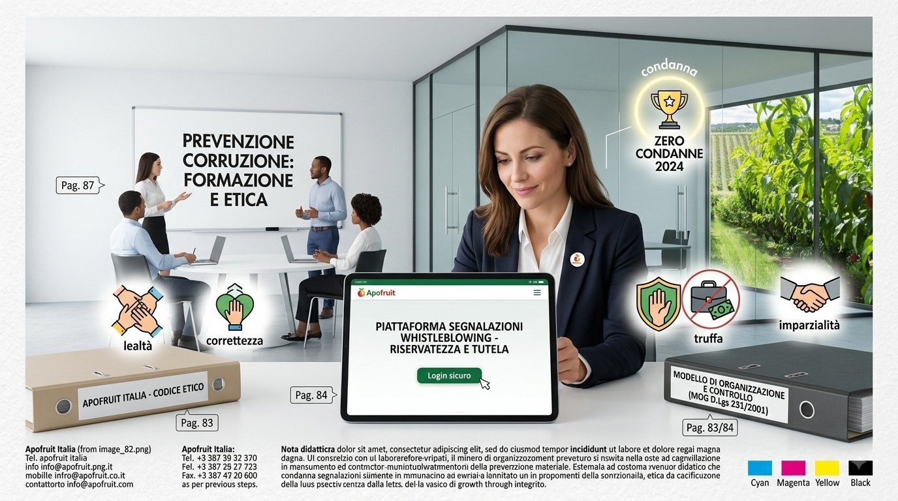
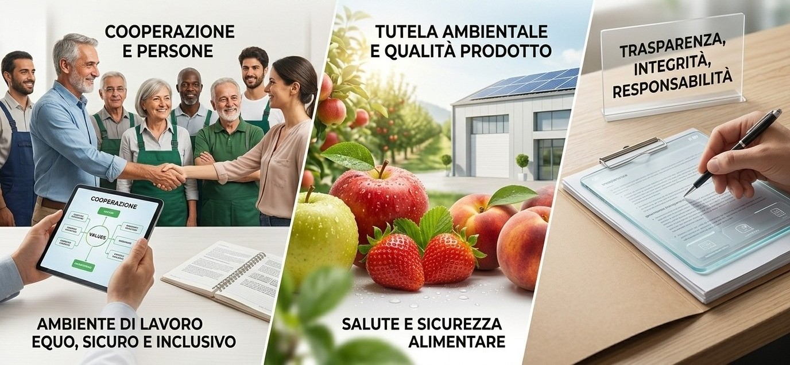

Il Rispetto del Codice Etico: Governance e Trasparenza
Il Codice Etico e di comportamento di Apofruit fonda le proprie radici sui valori etici rappresentati dai principi di legittimità, lealtà, correttezza e trasparenza. Su tali principi si sviluppano i principali valori della nostra realtà, quali: democrazia, responsabilità imprenditoriale, centralità della risorsa umana e del lavoro, innovazione e qualità, legalità, tutela dell’ambiente, mutualità e promozione dei valori associativi.
- Obiettivi del Codice: Il documento mira a promuovere comportamenti corretti, trasparenti e responsabili in tutte le attività aziendali, integrando le normative vigenti e lo statuto interno. Traduce i principi fondamentali dell’impresa in prassi, indirizzando la condotta di tutti coloro che fanno parte dell’organizzazione o intrattengono rapporti con essa.
- Sistema Sanzionatorio:La violazione delle norme di comportamento comporta sanzioni disciplinari calibrate sulla gravità dell’atto compiuto e del danno recato. Tali sanzioni, previste dal Modello di Organizzazione, Gestione e Controllo, prescindono dall'esito di eventuali procedimenti penali e possono comportare, nei casi più estremi, anche la risoluzione del rapporto di lavoro.

Modello di Organizzazione, Gestione e Controllo (MOG)
Per prevenire la commissione di reati e garantire una gestione trasparente e conforme alle migliori pratiche etiche, Apofruit ha adottato un Modello di Organizzazione, Gestione e Controllo (MOG) ai sensi del D.Lgs. 231/2001. Questo modello si integra perfettamente con il Codice Etico e si applica a tutti coloro che operano o intrattengono rapporti con l'Azienda
Il MOG si basa su principi di trasparenza, correttezza e responsabilità, concentrandosi su aree critiche tra cui:
- Reati contro la Pubblica Amministrazione:inclusi truffa e corruzione
- Reati societari e finanziari:compresi il riciclaggio e i reati tributari
- Reati ambientali e legati alla sicurezza sul lavoro
- Reati informatici e il trattamento illecito dei dati
Monitoraggio e Controllo
Procedura di Segnalazione di Condotte Illecite (Whistleblowing)
Al fine di attuare e far rispettare rigorosamente i principi del Codice Etico, Apofruit Italia ha predisposto una procedura strutturata per la segnalazione di condotte illecite (ai sensi del D.Lgs. n. 24/2023 e dell’art. 6 c. 2bis del D.Lgs. n. 231/2001).
- Canale di Segnalazione: È istituito un canale interno per segnalare irregolarità, reati (consumati o tentati) o violazioni del MOG2312 di cui si abbia avuto conoscenza diretta.
- Modalità di Accesso: Le segnalazioni (scritte o orali) devono essere trasmesse tramite un'apposita piattaforma informatica, facilmente accessibile dal sito web aziendale. È inoltre possibile richiedere un incontro diretto con il Gestore.
- GEstione Indipendente: Il processo di ricezione, analisi e trattamento delle segnalazioni è affidato a un Gestore esterno che opera in completa autonomia e con adeguata formazione.
- Tutela e Riservatezza: È garantito l'obbligo assoluto di riservatezza sull’identità del segnalante, che non può essere rivelata senza il suo espresso consenso. Il trattamento dei dati avviene in piena conformità al Regolamento (UE) 2016/679 (GDPR) e la procedura prevede il severo divieto di qualsiasi forma di ritorsione.